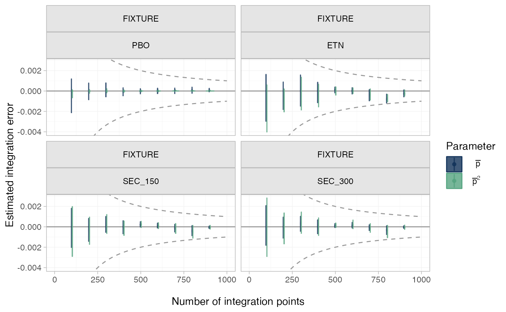

For ML-NMR models, plot the estimated numerical integration error over the entire posterior distribution, as the number of integration points increases. See (Phillippo et al. 2020; Phillippo 2019) for details.
Usage
plot_integration_error(
x,
...,
stat = "violin",
orientation = c("vertical", "horizontal", "x", "y"),
show_expected_rate = TRUE
)Arguments
- x
An object of type
stan_mlnmr- ...
Additional arguments passed to the
ggdistplot stat.- stat
Character string specifying the
ggdistplot stat used to summarise the integration error over the posterior. Default is"violin", which is equivalent to"eye"with some cosmetic tweaks.- orientation
Whether the
ggdistgeom is drawn horizontally ("horizontal") or vertically ("vertical"), default"vertical"- show_expected_rate
Logical, show typical convergence rate \(1/N\)? Default
TRUE.
Details
The total number of integration points is set by the n_int
argument to add_integration(), and the intervals at which integration
error is estimated are set by the int_thin argument to nma(). The
typical convergence rate of Quasi-Monte Carlo integration (as used here) is
\(1/N\), which by default is displayed on the plot output.
The integration error at each thinning interval \(N_\mathrm{thin}\) is
estimated for each point in the posterior distribution by subtracting the
final estimate (using all n_int points) from the estimate using only the
first \(N_\mathrm{thin}\) points.
Note for survival models
This function is not supported for survival/time-to-event models. These do not save cumulative integration points for efficiency reasons (both time and memory).
Examples
## Plaque psoriasis ML-NMR
# Set up plaque psoriasis network combining IPD and AgD
library(dplyr)
pso_ipd <- filter(plaque_psoriasis_ipd,
studyc %in% c("UNCOVER-1", "UNCOVER-2", "UNCOVER-3"))
pso_agd <- filter(plaque_psoriasis_agd,
studyc == "FIXTURE")
head(pso_ipd)
#> studyc trtc_long trtc trtn pasi75 pasi90 pasi100 age bmi pasi_w0
#> 1 UNCOVER-1 Ixekizumab Q2W IXE_Q2W 2 0 0 0 34 32.2 18.2
#> 2 UNCOVER-1 Ixekizumab Q2W IXE_Q2W 2 1 0 0 64 41.9 23.4
#> 3 UNCOVER-1 Ixekizumab Q2W IXE_Q2W 2 1 1 0 42 26.2 12.8
#> 4 UNCOVER-1 Ixekizumab Q2W IXE_Q2W 2 0 0 0 45 52.9 36.0
#> 5 UNCOVER-1 Ixekizumab Q2W IXE_Q2W 2 1 0 0 67 22.9 20.9
#> 6 UNCOVER-1 Ixekizumab Q2W IXE_Q2W 2 1 1 1 57 22.4 18.2
#> male bsa weight durnpso prevsys psa
#> 1 TRUE 18 98.1 6.7 TRUE TRUE
#> 2 TRUE 33 129.6 14.5 FALSE TRUE
#> 3 TRUE 33 78.0 26.5 TRUE FALSE
#> 4 FALSE 50 139.9 25.0 TRUE TRUE
#> 5 FALSE 35 54.2 11.9 TRUE FALSE
#> 6 TRUE 29 67.5 15.2 TRUE FALSE
head(pso_agd)
#> studyc trtc_long trtc trtn pasi75_r pasi75_n pasi90_r pasi90_n
#> 1 FIXTURE Etanercept ETN 4 142 323 67 323
#> 2 FIXTURE Placebo PBO 1 16 324 5 324
#> 3 FIXTURE Secukinumab 150 mg SEC_150 5 219 327 137 327
#> 4 FIXTURE Secukinumab 300 mg SEC_300 6 249 323 175 323
#> pasi100_r pasi100_n sample_size_w0 age_mean age_sd bmi_mean bmi_sd
#> 1 14 323 326 43.8 13.0 28.7 5.9
#> 2 0 324 326 44.1 12.6 27.9 6.1
#> 3 47 327 327 45.4 12.9 28.4 5.9
#> 4 78 323 327 44.5 13.2 28.4 6.4
#> pasi_w0_mean pasi_w0_sd male bsa_mean bsa_sd weight_mean weight_sd
#> 1 23.2 9.8 71.2 33.6 18.0 84.6 20.5
#> 2 24.1 10.5 72.7 35.2 19.1 82.0 20.4
#> 3 23.7 10.5 72.2 34.5 19.4 83.6 20.8
#> 4 23.9 9.9 68.5 34.3 19.2 83.0 21.6
#> durnpso_mean durnpso_sd prevsys psa
#> 1 16.4 12.0 65.6 13.5
#> 2 16.6 11.6 62.6 15.0
#> 3 17.3 12.2 64.8 15.0
#> 4 15.8 12.3 63.0 15.3
pso_ipd <- pso_ipd %>%
mutate(# Variable transformations
bsa = bsa / 100,
prevsys = as.numeric(prevsys),
psa = as.numeric(psa),
weight = weight / 10,
durnpso = durnpso / 10,
# Treatment classes
trtclass = case_when(trtn == 1 ~ "Placebo",
trtn %in% c(2, 3, 5, 6) ~ "IL blocker",
trtn == 4 ~ "TNFa blocker"),
# Check complete cases for covariates of interest
complete = complete.cases(durnpso, prevsys, bsa, weight, psa)
)
pso_agd <- pso_agd %>%
mutate(
# Variable transformations
bsa_mean = bsa_mean / 100,
bsa_sd = bsa_sd / 100,
prevsys = prevsys / 100,
psa = psa / 100,
weight_mean = weight_mean / 10,
weight_sd = weight_sd / 10,
durnpso_mean = durnpso_mean / 10,
durnpso_sd = durnpso_sd / 10,
# Treatment classes
trtclass = case_when(trtn == 1 ~ "Placebo",
trtn %in% c(2, 3, 5, 6) ~ "IL blocker",
trtn == 4 ~ "TNFa blocker")
)
# Exclude small number of individuals with missing covariates
pso_ipd <- filter(pso_ipd, complete)
pso_net <- combine_network(
set_ipd(pso_ipd,
study = studyc,
trt = trtc,
r = pasi75,
trt_class = trtclass),
set_agd_arm(pso_agd,
study = studyc,
trt = trtc,
r = pasi75_r,
n = pasi75_n,
trt_class = trtclass)
)
# Print network details
pso_net
#> A network with 3 IPD studies, and 1 AgD study (arm-based).
#>
#> ------------------------------------------------------------------- IPD studies ----
#> Study Treatment arms
#> UNCOVER-1 3: IXE_Q2W | IXE_Q4W | PBO
#> UNCOVER-2 4: ETN | IXE_Q2W | IXE_Q4W | PBO
#> UNCOVER-3 4: ETN | IXE_Q2W | IXE_Q4W | PBO
#>
#> Outcome type: binary
#> ------------------------------------------------------- AgD studies (arm-based) ----
#> Study Treatment arms
#> FIXTURE 4: PBO | ETN | SEC_150 | SEC_300
#>
#> Outcome type: count
#> ------------------------------------------------------------------------------------
#> Total number of treatments: 6, in 3 classes
#> Total number of studies: 4
#> Reference treatment is: PBO
#> Network is connected
# Add integration points to the network
pso_net <- add_integration(pso_net,
durnpso = distr(qgamma, mean = durnpso_mean, sd = durnpso_sd),
prevsys = distr(qbern, prob = prevsys),
bsa = distr(qlogitnorm, mean = bsa_mean, sd = bsa_sd),
weight = distr(qgamma, mean = weight_mean, sd = weight_sd),
psa = distr(qbern, prob = psa),
n_int = 64)
#> Using weighted average correlation matrix computed from IPD studies.
# \donttest{
# Fit the ML-NMR model
pso_fit <- nma(pso_net, refresh = if (interactive()) 200 else 0,
trt_effects = "fixed",
link = "probit",
likelihood = "bernoulli2",
regression = ~(durnpso + prevsys + bsa + weight + psa)*.trt,
class_interactions = "common",
prior_intercept = normal(scale = 10),
prior_trt = normal(scale = 10),
prior_reg = normal(scale = 10),
init_r = 0.1,
QR = TRUE,
# Set the thinning factor for saving the cumulative results
# (This also sets int_check = FALSE)
int_thin = 8)
#> Note: Setting "PBO" as the network reference treatment.
pso_fit
#> A fixed effects ML-NMR with a bernoulli2 likelihood (probit link).
#> Regression model: ~(durnpso + prevsys + bsa + weight + psa) * .trt.
#> Centred covariates at the following overall mean values:
#> durnpso prevsys bsa weight psa
#> 1.8134535 0.6450416 0.2909089 8.9369318 0.2147914
#> Inference for Stan model: binomial_2par.
#> 4 chains, each with iter=2000; warmup=1000; thin=1;
#> post-warmup draws per chain=1000, total post-warmup draws=4000.
#>
#> mean se_mean sd 2.5% 25%
#> beta[durnpso] 0.04 0.00 0.06 -0.07 0.01
#> beta[prevsys] -0.14 0.00 0.16 -0.44 -0.24
#> beta[bsa] -0.07 0.01 0.44 -0.96 -0.35
#> beta[weight] 0.04 0.00 0.03 -0.02 0.02
#> beta[psa] -0.08 0.00 0.18 -0.42 -0.20
#> beta[durnpso:.trtclassTNFa blocker] -0.03 0.00 0.07 -0.17 -0.08
#> beta[durnpso:.trtclassIL blocker] -0.01 0.00 0.07 -0.15 -0.06
#> beta[prevsys:.trtclassTNFa blocker] 0.19 0.00 0.18 -0.17 0.07
#> beta[prevsys:.trtclassIL blocker] 0.06 0.00 0.17 -0.29 -0.05
#> beta[bsa:.trtclassTNFa blocker] 0.06 0.01 0.52 -0.95 -0.29
#> beta[bsa:.trtclassIL blocker] 0.29 0.01 0.48 -0.61 -0.03
#> beta[weight:.trtclassTNFa blocker] -0.17 0.00 0.04 -0.24 -0.19
#> beta[weight:.trtclassIL blocker] -0.10 0.00 0.03 -0.16 -0.12
#> beta[psa:.trtclassTNFa blocker] -0.06 0.00 0.21 -0.46 -0.20
#> beta[psa:.trtclassIL blocker] 0.01 0.00 0.19 -0.36 -0.12
#> d[ETN] 1.55 0.00 0.08 1.39 1.50
#> d[IXE_Q2W] 2.95 0.00 0.09 2.79 2.90
#> d[IXE_Q4W] 2.54 0.00 0.08 2.39 2.49
#> d[SEC_150] 2.14 0.00 0.11 1.92 2.07
#> d[SEC_300] 2.45 0.00 0.12 2.22 2.37
#> lp__ -1576.33 0.10 3.53 -1583.96 -1578.50
#> 50% 75% 97.5% n_eff Rhat
#> beta[durnpso] 0.04 0.09 0.16 7034 1
#> beta[prevsys] -0.14 -0.03 0.19 6774 1
#> beta[bsa] -0.06 0.24 0.73 7510 1
#> beta[weight] 0.04 0.06 0.10 5659 1
#> beta[psa] -0.08 0.04 0.26 5738 1
#> beta[durnpso:.trtclassTNFa blocker] -0.03 0.02 0.11 6633 1
#> beta[durnpso:.trtclassIL blocker] -0.01 0.03 0.12 7088 1
#> beta[prevsys:.trtclassTNFa blocker] 0.19 0.32 0.55 6959 1
#> beta[prevsys:.trtclassIL blocker] 0.06 0.18 0.41 8397 1
#> beta[bsa:.trtclassTNFa blocker] 0.06 0.40 1.09 6986 1
#> beta[bsa:.trtclassIL blocker] 0.29 0.61 1.28 8338 1
#> beta[weight:.trtclassTNFa blocker] -0.17 -0.14 -0.10 6602 1
#> beta[weight:.trtclassIL blocker] -0.10 -0.08 -0.04 6045 1
#> beta[psa:.trtclassTNFa blocker] -0.06 0.08 0.35 6134 1
#> beta[psa:.trtclassIL blocker] 0.01 0.14 0.38 6739 1
#> d[ETN] 1.55 1.60 1.71 4999 1
#> d[IXE_Q2W] 2.95 3.01 3.13 5635 1
#> d[IXE_Q4W] 2.54 2.60 2.70 6336 1
#> d[SEC_150] 2.15 2.22 2.37 6262 1
#> d[SEC_300] 2.45 2.53 2.67 6272 1
#> lp__ -1575.98 -1573.78 -1570.64 1292 1
#>
#> Samples were drawn using NUTS(diag_e) at Thu Apr 25 08:36:51 2024.
#> For each parameter, n_eff is a crude measure of effective sample size,
#> and Rhat is the potential scale reduction factor on split chains (at
#> convergence, Rhat=1).
# Plot numerical integration error
plot_integration_error(pso_fit)

# }